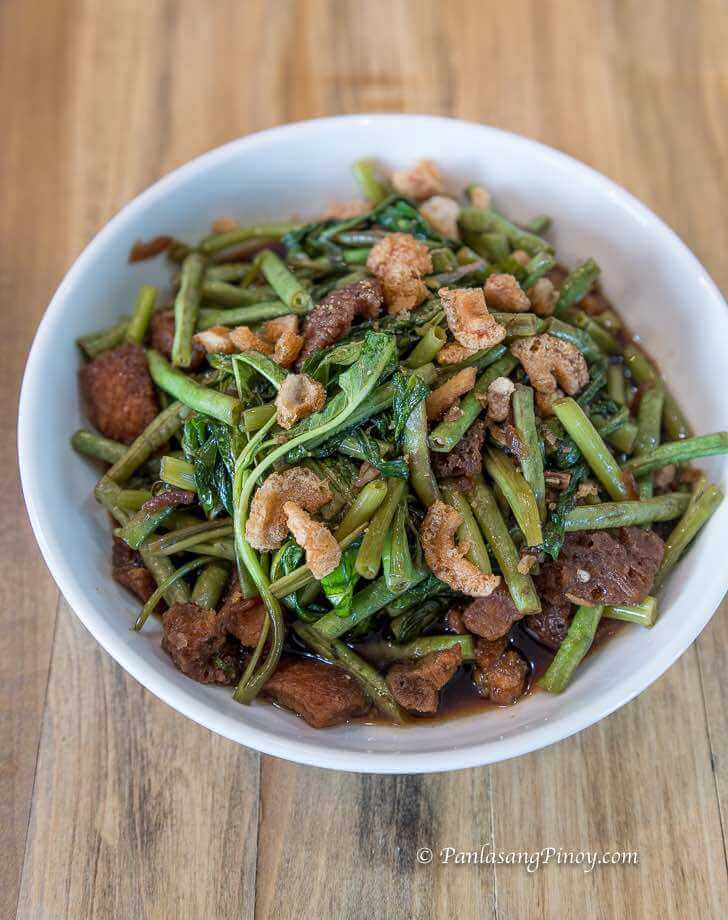

Home: Recipe Archive
Adobong Sitaw at Kankong sa Chicharon

Ingredients
- Sitaw
- Kangkong
- Chicharon
- 1 tablespoon vinegar
- 2 tablespoons soy sauce
- 3 cloves garlic
- 1/2 piece onion
- 1.5 tablespoons cooking oil
- 125 g water
- salt and ground black pepper
Instructions
- Heat oil in a pan. Sauté garlic and onion until the onion softens and the garlic turn light brown.
- Pour soy sauce, vinegar, and water. Let boil.
- Add chicharon. Cover the pot. Continue to cook for 10 minutes medium heat.
- Add sitaw. Stir and cook for 5 minutes.
- Put the kangkong stalks into the pan. Cook for 3 minutes.
- Add the kangkong leaves. Stir and cook for 2 minutes.
- Season with salt and ground black pepper